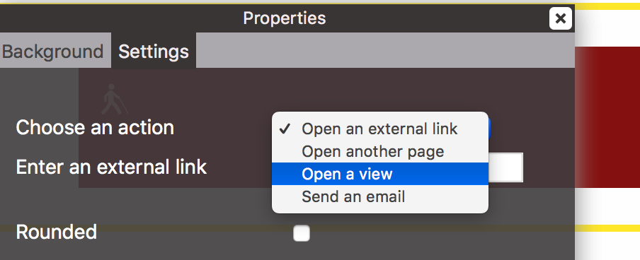
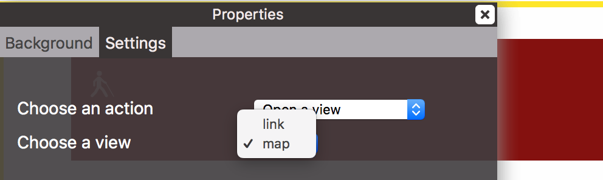

It is possible to open a view from a page without opening another page, using the popup panel. Here's the procedure to follow :
1. Create two views.
- A view «myView», where you have to drop a component «Link Card» or any navigation component.
- A view « map » where you can drop a «Map with title» component.
2. Create a new page
Create a new page "map". In this page, drop the view "myView".
3. Setup the popup link.
We are now going to ask our link to open another view from the current page, whitout opening another page.
- Go back to the view "myView".
- Select the "Link Card" component.
- Open the preferences panel, tab "Settings".
- Select "Open a view" for the action.
- Then select the view “Map” in "Choose a view".


4. Publish the project.
Then publish your project and navigate to the page “map.html”. Click on the link. It will open up the popup panel with the view “map” while staying on the same page. A button (cross) at to top right allow to close the panel. You can add any content to a popup view.
Made with Sled | Copyright © 2018